Gather at Jewel
Explore together, meet the Director and prepare for the journey.
A TEAM ADVENTURE IN THE MAKING
Change the past. Restore the flow.
The waterfall has stopped. Travel through time, work as a team, and bring the pieces together to restore it.
Game main-menu artwork · Illustration
Planned team experience
Game development is ongoing.
THE STORY / 01
The Rain Vortex has stopped. To restore the flow, a team must go back and solve the problems left in the past.
Inspired by Avengers: Endgame, the Director sends ten students through time. Each takes on a construction role, completes five levels and earns five jigsaw pieces. Together, they bring all 50 pieces back to the Director to complete the picture and restart the waterfall.
This is a fictional game story. The faults, time travel and mission locations are imagined; they are not claims about the real Jewel.
THE PEOPLE BEHIND THE PLAN / 02
Every role sees the problem differently. Choose a role to explore its story and five-level path.
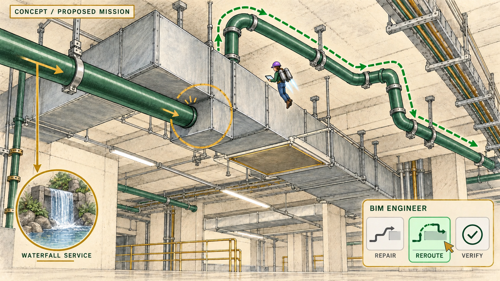
01MISSION 01
Shrink down. Find the clash.
Explore mission ↗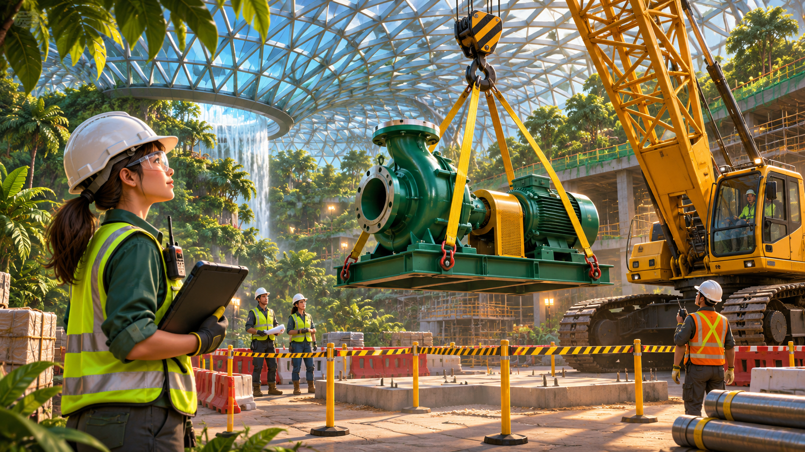
02MISSION 02
Plan the lift. Keep everyone safe.
Explore mission ↗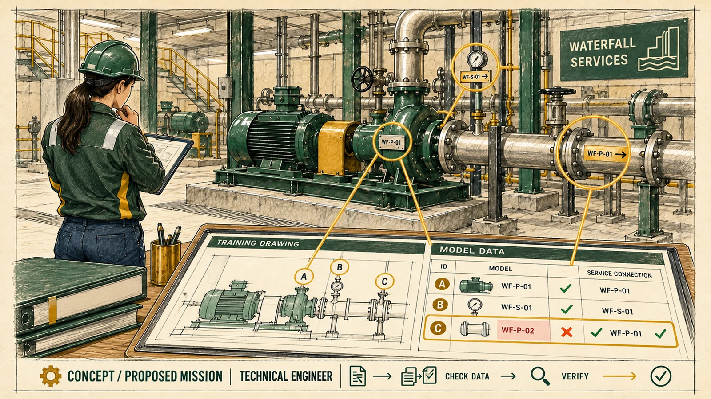
03MISSION 03
Make the details match.
Explore mission ↗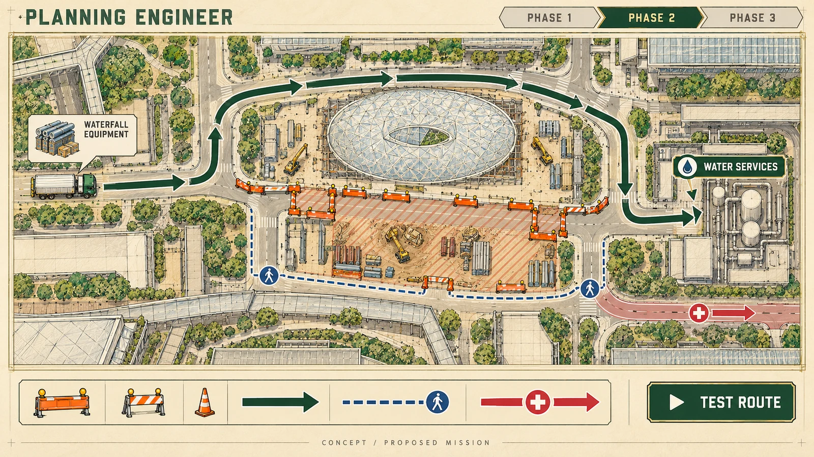
04MISSION 04
Make a route. Keep the work moving.
Explore mission ↗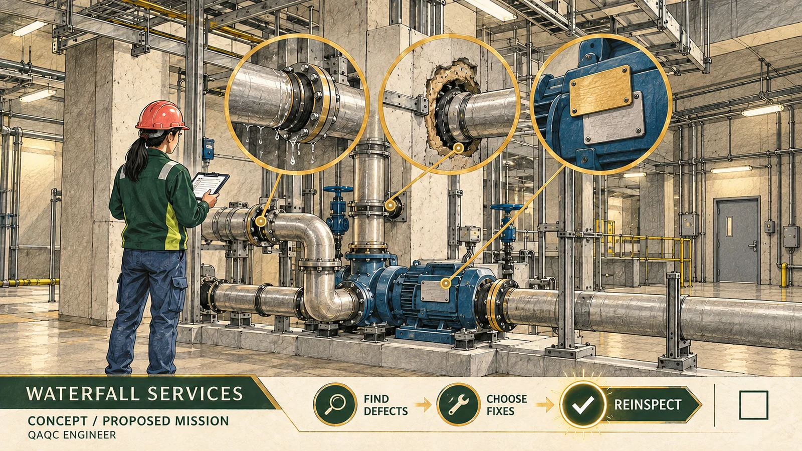
05MISSION 05
Find it. Fix it. Check again.
Explore mission ↗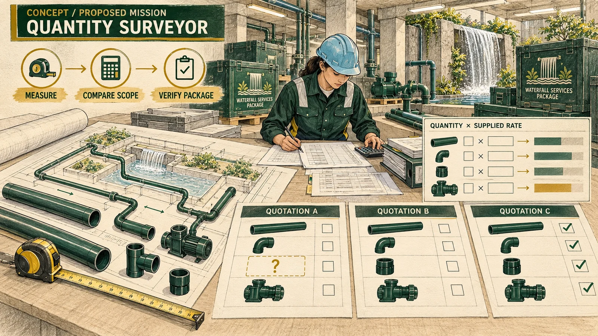
06MISSION 06
Count what the job needs.
Explore mission ↗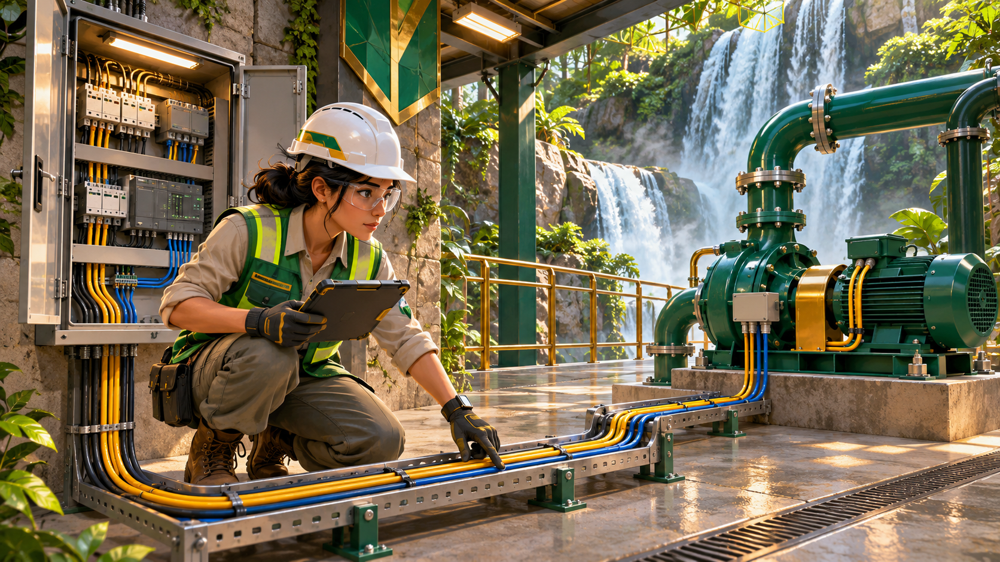
07MISSION 07
Connect the systems.
Explore mission ↗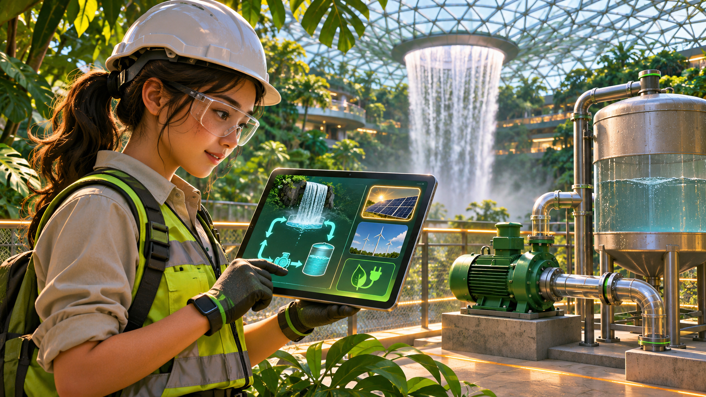
08MISSION 08
Restore the flow wisely.
Explore mission ↗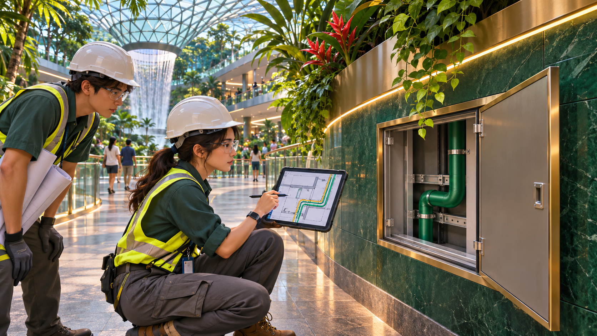
09MISSION 09
Make space for the people and the services.
Explore mission ↗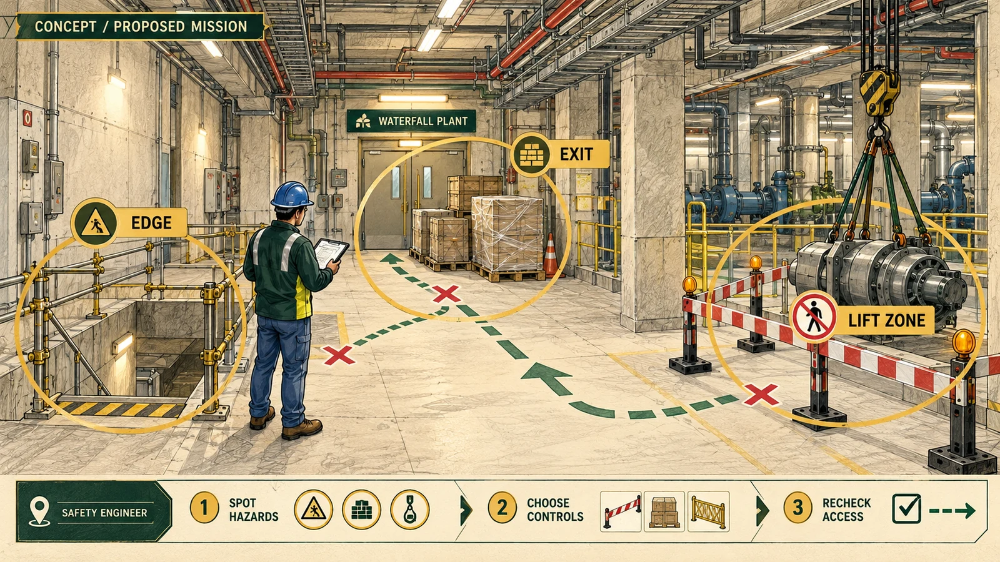
10MISSION 10
Make the route safe.
Explore mission ↗Mission ideas and images are concepts for discussion. They may change as the game is developed.
THE JOURNEY / 03
Ten roles. Five levels each. Fifty pieces for one picture.
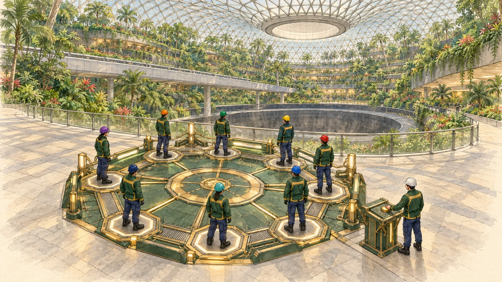
Explore together, meet the Director and prepare for the journey.
The Director starts the time machine. Each engineer heads to a role-based mission.
Finish each level to earn a piece. Share clues, help teammates and use a time watch to return.
Give your pieces to the Director. Complete the 50-piece Jewel picture to bring the waterfall back.
THE FINAL PICTURE / 04
Every level earns one piece. The ten roles each collect five, then bring all 50 to the Director to complete the picture and restore the waterfall.
Explore the picture below: select a piece to see its role and level. Each column belongs to one role; each row is one of its five levels.
Simplified exterior illustration with a small colour palette, made as a concept for the future physical jigsaw. A 3D-printable model will need its own dimensions, piece fit and print tests.
BETTER TOGETHER / 05
One student Director and ten engineers, each on their own PC.
The Director hosts the session, starts the time machine and follows the team’s progress. Engineers work on their own missions, share clues and help one another when they finish.
Planned setup: 11 students on 11 PCs connected over a local network. This multiplayer setup and the new ten-role version still need to be built and tested.
Host the team. Start the journey. Complete the jigsaw. Restore the flow.
Explore the ten roles ↗